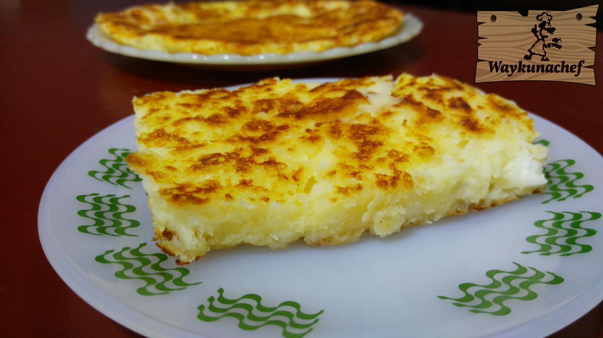

Sonso de yuca al horno

La yuca tiene beneficios nutricionales interesantes gracias a su alto contenido en hidratos de carbono complejos que aportan energías, ayudan a sentir saciedad y disminuir el apetito. Por su bajo contenido calórico es recomendable en dietas de adelgazamiento. Además, es muy saludable por su rico contenido de vitaminas (C y B6) y minerales (potasio y magnesio). Por otro lado, al ser un alimento fácil de digerir, su consumo está recomendado en personas que padecen transtornos y afecciones digestivas y, al no ser una fuente de gluten, es apto para el consumo de personas celíacas
Ingredientes
2 yucas grandes
1 vaso de leche
4 cucharadas de mantequilla
2 tazas de queso (de preferencia queso menonita)
4 huevos
Sal y azúcar al gusto
Preparación
Pelar las yucas, cortarlas en trozos y ponerlas a hervir en agua con sal hasta que estén tiernas. Rallar el queso y derretir la mantequilla. Precalentar el horno a 190º. Una vez que las yucas estén listas, se deben aplastar hasta crear una especie de puré. Añadir los huevos batidos y la mantequilla al puré de yuca y mezlcar. Incorporar la leche poco a poco para evitar que la masa quede muy líquida y seguir removiendo y mezclando bien toda la mezcla. (Debe de quedar consistente de manera que pueda ser manejada con las manos. Si ha quedado demasiado líquida, añadir un poquito más de yuca, removiendo bien hasta que se consiga la consistencia deseada). Una vez lista la masa, añadir el queso, la sal y un poco de azúcar y volver a mezclar todo muy bien. Verter la masa en un recipiente e introducir al horno. Cocinar la preparación a 190º durante 20 minutos. Si es necesario, añadir 5 minutos más en el grill para que se dore la capa superior. Sacar del horno y degustar